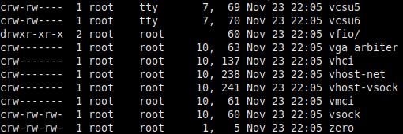
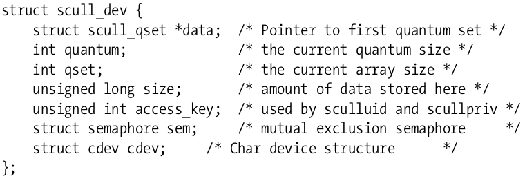
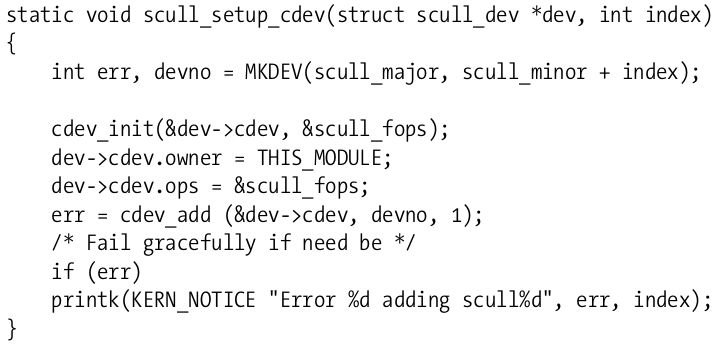

一个简单的字符驱动程序
Table of Contents
本文将详细介绍在Linux平台的一个简单字符驱动程序的编写。它操作的是一片内存，把内存当作设备，这样可以不依赖于具体的硬件设备, 就把这个简单字符驱动程序叫s_driver吧.
1 背景知识
1.1 主设备号和次设备号
访问设备要通过文件系统中的设备文件。Linux把设备抽象成文件，访问设备也就是访问文件。这些文件都很特殊，通常位于/dev目录下，用ls -l可以看到字符设备第一列是c字母开头，而块设备是b开头，同时可以看到有两个数字由逗号隔开，如下图：

Figure 1: ls -l /dev的部分输出
前一个数字就是所谓的主设备号, 后一个是次设备号. 所谓主设备号, 它标识了设备对应的驱动程序, 而次设备号用来确定具体的设备文件所指的设备. 不同的设备文件可由同一个驱动程序来进行管理, 比如图中的vcsu5和vcsu6由驱动程序7管理, 但次设备号69, 70区分了是哪个设备.
在内核内部, 用dev_t的类型来表示设备编号: 即包括主设备编号又包括次设备编号. 如下位于Linux内核中的代码:
typedef u32 __kernel_dev_t; typedef __kernel_dev_t dev_t;
可以看到dev_t实际是一个32位的数. 其中的高12位用来表示主设备号, 而低20位用来表示次设备号. 当然这种情况可能不是未来一直都正确. 所以内核提供了操作dev_t类型的宏:
#define MINORBITS 20 #define MINORMASK ((1U << MINORBITS) - 1) #define MAJOR(dev) ((unsigned int) ((dev) >> MINORBITS)) #define MINOR(dev) ((unsigned int) ((dev) & MINORMASK))
MAJOR用于获得主设备号, 而MINOR用于获得次设备号. 可以稍微注意下这里的代码技巧, 首先定义了MINORBITS为20, dev右移20位丢弃低20位的数据即得高12位的major number, 为了获的minor number是先获得了MINORMASK, 即1先左移20位, 相当于1后跟20个0, 然后再减1, 这样20个0变成20个1, 再相与于dev即得低20位的minor number.
理解了这些宏, 下面的MKDEV要做的啥工作就很简单了:
#define MKDEV(ma,mi) (((ma) << MINORBITS) | (mi))
1.2 分配和释放设备编号
如前面的图, 设备都有编号, 自然我们的简单字符驱动程序s_driver也需要设备编号, 内核提供两个函数用来分配设备编号:
- register_chrdev_region(dev_t first, unsigned int count, char *name)
- alloc_chrdev_region(dev_t *dev, unsigned int firstminor, unsigned int count, char *name)
两个函数的参数count和name的意义是一样的, count是所请求的连续设备编号的个数. name是和该设备编号范围相关的字符串名, 它会出现在/proc/devices中. 前一个函数中，first是要分配的设备编号范围的起始值。 而第二个函数用于动态的分配设备编号，其输出的设备编号会存在第一个参数dev中。
在使用完后，要予以释放：
- void unregister_chrdev_region(dev_t first, unsigned count)
通常在模块清除函数中调用这个函数。
前述已讲到，操作设备其实还是是操作文件，只不过是一类特殊的设备文件。创建这些设备文件使用mknod命令，使用mknod命令创建设备文件时需要知道设备的主设备号作为参数，不过若选择alloc_chrdev_region方式来分配设备号，设备号是动态的，我们无法预先知道。这里有个方法是在加载了模块后，alloc_chrdev_region函数作为模块初始化的一部分，就注册好了设备号，在文件/proc/devices中可以看到，使用awk命令稍微处理下这个文本就可以得到major number了。如下取自s_driver_load.sh脚本中的部分代码所示：
insmod ./$module.ko $* || exit 1 major=$(awk "\$2==\"$module\" {print \$1}" /proc/devices) mknod /dev/${device}0 c $major 0
1.3 关键数据结构
很多基本的驱动操作都涉及到三个重要的内核数据结构，分别是file_operations，file以及inode，下面依次来看看。
1.3.1 file_operations
到目前为止，我们预留了设备号，但还没有将这些设备号与驱动操作联系起来，file_operations结构体正是设定这种连接。每一个打开的文件都有file结构体表示（后面会讲到），其内有一个file_operations类型的成员f_op指向了设备（驱动）的操作函数，这些操作也是对应相应的系统调用比如read，open等。可以把文件当作一个对象，而这些函数（file_operations）当作方法，这就是面向对象编程的术语了，其实内核中有很多这样的面向对象思想，以后还会看到。
下面可以先直观的看下file和file_operations结构体：
struct file { union { struct llist_node fu_llist; struct rcu_head fu_rcuhead; } f_u; struct path f_path; struct inode *f_inode; /* cached value */ const struct file_operations *f_op; ... }
struct file_operations { struct module *owner; loff_t (*llseek) (struct file *, loff_t, int); ssize_t (*read) (struct file *, char __user *, size_t, loff_t *); ssize_t (*write) (struct file *, const char __user *, size_t, loff_t *); ssize_t (*read_iter) (struct kiocb *, struct iov_iter *); ssize_t (*write_iter) (struct kiocb *, struct iov_iter *); int (*iopoll)(struct kiocb *kiocb, bool spin); int (*iterate) (struct file *, struct dir_context *); int (*iterate_shared) (struct file *, struct dir_context *); __poll_t (*poll) (struct file *, struct poll_table_struct *); ... }
通常，file_operations结构体或者指向file_operations结构体的指针叫做fops，每一个在结构体中的指针指向驱动里实现的具体的函数。而对于留NULL的指针，内核精确的行为有所不同。下面的列表介绍了可以对device调用的操作。
struct module *owner
指向拥有file_operations的模块，这个成员用来防止模块正在操作时却被unload了。它一般被初始化为THIS_MODULE。
loff_t (*llseek) (struct file *, loff_t, int)
loff_t实际上是一个long long型。这个函数用来改变当前文件的读写位置，新的位置由一个返回的正数值表示，负值代表出错。如果这个函数是NULL，对llseek的调用将会以一种不可预知的方式修改file文件结构体的位置计数器（后文介绍）。
ssize_t (*read) (struct file *, char __user *, size_t, loff_t *)
ssize_t通常就是目标平台的整数类型。该函数用来从设备中读取内容，返回的正数值表示了实际读了多少字节，如果为NULL的话，read系统调用返回-EINVAL。
ssize_t (*write) (struct file *, const char __user *, size_t, loff_t *)
给设备发送数据。如果为NULL，就返回-EINVAL给调用程序。返回值如果非负，代表成功写入的字节数。
__poll_t (*poll) (struct file *, struct poll_table_struct *)
这个函数是poll、epoll以及select的下层实现，这些函数的功能是：查询对于一个（或多个）文件描述符的读写是否会阻塞。该函数返回一个bit mask来表明是否一个非阻塞的读写操作是可能的（设备可以被立即读写，无需等待）。这也会提供给内核一些信息来决定是否应该将进程放入睡眠状态，直到I/O操作变得可能。如果这个函数是null，则是假定设备是可以无阻塞的读写的。
int (*mmap) (struct file *, struct vm_area_struct *)
mmap用来将设备的内存映射到进程的地址空间，如果这个函数是null，mmap就返回-ENODEV。
int (*open) (struct inode *, struct file *)
打开设备文件，如果这个函数是NULL，打开设备总是成功，但是驱动不会被通知。
int (*release) (struct inode *, struct file *)
当file结构体被释放时，该方法就会被调用，如同open，release也可是NULL。
int (*fsync) (struct file *, loff_t, loff_t, int datasync)
本函数是fsync系统调用的后端实现，用户调用fsync时，就会同步所有数据。如果本函数是NULL，调用它就会返回-EINVAL。
int (*fasync) (int, struct file *, int)
如果设备的FASYNC标志有所改变，本函数可以用来通知。
int (*lock) (struct file *, int, struct file_lock *)
用来实现文件锁，文件锁机制对于常规文件是不可或缺的，不过对于设备驱动来说几乎不会实现这个函数。
s_driver只会实现其中几个重要的函数, 它的初始化如下:
struct file_operations s_fops = { .owner = THIS_MODULE, .llseek = s_llseek, .read = s_read, .write = s_write, .unlocked_ioctl = s_ioctl, .open = s_open, .release = s_release, };
这个初始化方式在C里叫标签结构体初始化语法, 使得代码可读性较好, 这种方式允许重排成员的顺序, 在某些情况下, 将频繁访问的成员放在同一个硬件缓存行里会提高性能.
1.3.2 file
file结构体定义在linux/fs.h中, 注意file结构体和用户程序中的FILE指针(在C库中实现)是根本不同的事物, file在内核空间中, FILE在用户空间中.
一个打开的文件都有一个与之关联的file结构体(设备驱动也不例外), 在调用open时就会创建这个结构体. 在内核上下文里, filep通常是一个指向file结构体的指针.
下面介绍一些其中的重要结构体:
struct file { fmode_t f_mode; loff_t f_pos; unsigned int f_flags; const struct file_operations *f_op; void *private_data; };
简单解释下这些成员的作用:
f_mode:
这个域表明了文件是可读或可写的, 通过比特FMODE_READ或FMODE_WRITE来判断.
f_pos:
当前的文件读写位置, loff_t是一个64-bit的值. 驱动如果需要知道文件的当前位置, 可以读取这个成员, 但通常不应该修改它. 这个成员会依据read和write的最后一个成员来修改. llseek会直接修改这个成员.
f_flags:
这个成员表示了文件的标志, 比如O_RDONLY, O_NONBLOCK以及O_SYNC. 驱动应该检查O_NONBLOCK来检查是否是非阻塞操作请求, 而驱动很少使用其它标志了. 而read/write权限的检查应该f_mode而不是f_flags.
f_op:
与文件关联的函数操作指针. 作为open调用实现的一个部分, 内核会在其中分配file_operations结构体指针, 当需要发起操作时, 内核就会读取这个结构体. 同一个major number(比如1, 管理着/dev/null和/dev/zero)的不同设备, 因其minor number不同, 在open实现里就会根据这个minor number来给f_op赋予不同的值, 这其实就是面向对象编程里的方法重载的概念.
private_data:
可以作为自己某种用途的空间, 当然也可以忽略. 如果不为空, 在release方法里, 在销毁file结构体之前, 要记得先释放private_data所指向的空间. 在我们的例子代码里常常会用这个成员来传递系统调用之间的状态信息.
1.3.3 inode
在内核内部使用的是inode结构体来表示文件，它与file结构体不同，file结构体用来表示一个打开的文件描述符。在一个文件上可以有许多打开的文件描述符，进而有多个file结构体与之对应，但是它们可能都对应一个inode结构体。
inode结构体包含许多信息，但是作为驱动作者，仅仅关心其中两个成员：
dev_t i_rdev:
对于inode表示的是设备文件时，这个成员包含了实际的设备号码。
struct cdev *i_cdev:
当inode指向一个字符设备时，这个成员就是内核内部对于字符设备的结构体表示。
为了提高程序的可移植性，内核开发者提供了两个宏用于从inode中获取major以及minor号码：
static inline unsigned iminor(const struct inode *inode) { return MINOR(inode->i_rdev); } static inline unsigned imajor(const struct inode *inode) { return MAJOR(inode->i_rdev); }
可以看到内部其实还是前文介绍过的MINOR和MAJOR宏。
1.4 字符设备注册
如前介绍过的，在内核内部使用cdev结构体来描述字符设备，在内核能够调用设备操作之前，必须要分配和注册这些结构体。在编写的代码里必须包含<linux/cdev.h>，这个头文件会定义相关的结构体和关联的辅助函数。
有两种方式可以用来初始化这些结构体，如果想在运行时动态的分配一个单独的cdev结构体，可以使用下面的代码：
struct cdev *my_cdev = cdev_alloc(); my_cdev->ops = &my_fops;
不过某些时候，想要把cdev类型的结构体嵌入到自己定义的设备相关的结构体里，这也是scull驱动程 序所做的。在这种情况下，就需要使用如下代码来初始化了：
void cdev_init(struct cdev *cdev, )
无论采用哪种方式，cdev结构体都需要初始化。和file_operations结构体类似，struct cdev也有一个owner域需要被设置成THIS_MODULE。
cdev结构体设置好了之后，最后一步就是向内核宣告它的存在：
int cdev_add(struct cdev *dev, dev_t num, unsigned int count);
这里dev就是cdev结构体了，num是这个设备会响应的第一个数字，count是关联到这个设备的号码个数。通常count是1，不过有时候对于一个特定的设备有多个设备号码是有意义的，比如，对于SCSI磁带驱动，通过分配给物理设备以多个minor number，可以允许用户空间去选择不同的操作模式。
使用cdev_add有几点需要注意，一是这个调用可能会失败，如果是返回负值，设备就没能加入到系统里。但大多数时候，它是返回成功的。不过只要cdev_add返回成功，设备在系统中就处于live状态，它与之关联的操作就可能会被调用。在完全准备好处理设备相关联的操作之前，cdev_add不应该被调用。
为了从系统中删除char字符设备：
void cdev_del(struct cdev *dev);
当然，cdev_del被调用了就不应该再访问cdev结构体了。
1.4.1 scull驱动中的设备注册
scull驱动使用struct scull_dev来代表每个结构体。这个结构体如下定义：

Figure 2: scull_dev结构体
后面遇到这个结构体里的成员时再详细介绍每个成员。现在注意下cdev成员，cdev充当内核和设备之间的接口。这个结构体必须被初始化并添加到系统中，scull的scull_setup_cdev函数完成这个处理：

Figure 3: cdev初始化
注意这里是初始化dev里内嵌的cdev。
1.4.2 open和release方法
现在可以看下在scull里使用的open和release方法。
- open方法
驱动实现open方法一般是做一些准备的操作。在许多驱动里，open一般会执行下面这些任务：
- 检查设备相关的错误（比如设备未准备就绪或者是类似的硬件问题）。
- 如果设备是第一次打开，初始化它。
- 如果有必要，需要更新f_op指针。
- 分配和填充filp->private_data中的数据结构。
不过第一步当然是确认哪个设备被打开，回忆open方法的原型如下：
int (*open) (struct inode *inode, struct file *filp)
inode参数里的i_cdev成员就包含了之前设置好的cdev结构体，但问题是我们并不想要cdev结构体，而是想要包含cdev结构体的scull_dev结构体。C语言提供offsetof来达到这个目的，不过在linux/kernel.h里已经定义好了一个container_of宏可供使用：
container_of(pointer, container_type, container_field)这个宏的pointer参数指向一个container_field的类型，这个成员类型（container_field）存在于 container_type结构体中，并且返回一个指向包含结构体类型（container_type）的指针。